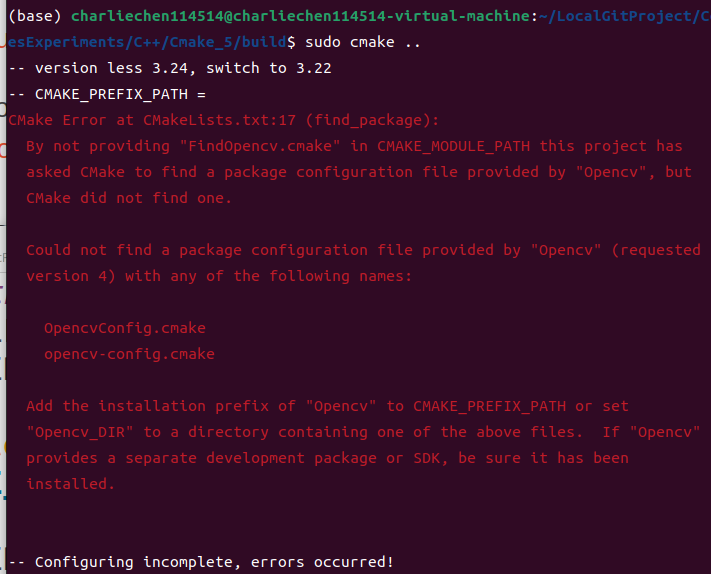
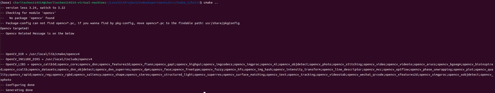
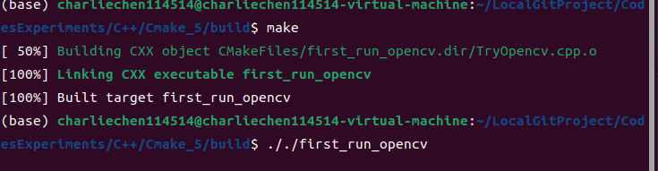
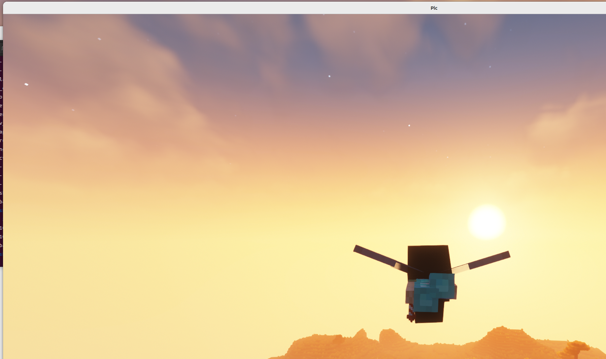

CMake使用小记-3
CMake小记3: find_package
以opencv为例
我们下面就要开始讲授难一些的内容了：也就是当我们的程序需要外部库才能消除未定义符号从而正确的完成构建之后，我们应该如何使用CMake来帮助构建程序。
本文的测试程序如下：
#include <opencv2/highgui.hpp>
#include <opencv2/opencv.hpp>
using namespace cv;
std::string path = "/home/charliechen114514/LocalGitProject/CodesExperiments/C++/Cmake_5/desktop2.png";
// 注意path换成自己图片的路径，需要注意的是不要含中文名，否则解析可能存在问题
int main()
{
Mat pic = imread(path);
if(pic.empty())
{
std::cerr << "Can not find the target pic path:> " \
<< path << "\n";
return -1;
}
std::cout << "Try to show the image:> " << path;
imshow("Pic", pic);
waitKey(0);
return 0;
}find_package简单介绍
这个函数表示的是CMake查找包的意思。我们这一次打算拿著名的计算机视觉开源库Opencv来完成这样的事情。
我们首先应用起来之前学习CMakeLists知识，来整点：
# Blocks are used to ensure the cmake version
if(${CMAKE_VERSION} VERSION_LESS 3.24)
cmake_minimum_required(VERSION ${CMAKE_MAJOR_VERSION}.${CMAKE_MINOR_VERSION})
message(STATUS "version less 3.24, switch to ${CMAKE_MAJOR_VERSION}.${CMAKE_MINOR_VERSION}")
else()
cmake_minimum_required(VERSION 3.24)
message(STATUS "version is good, no need to switch")
endif()
# Block End
project(First_CMake_Project
VERSION 1.0
DESCRIPTION "A demo for using imported libraries")
# SET THIS AS DEBUG MODE, for I need DEBUG lol
SET(CMAKE_BUILD_TYPE "Debug") 鲁莽的直接找包可能会出现：

我们下面来看看find_package到底是如何找包的：
find_package工作模式
find_package命令有两种工作模式，这两种工作模式的不同决定了其搜包路径的不同：
Module模式
find_package命令基础工作模式(Basic Signature)，也是默认工作模式。Config模式
find_package命令高级工作模式(Full Signature)。 只有在find_package()中指定CONFIG、NO_MODULE等关键字，或者Module模式查找失败后才会进入到Config模式。
find_package(<package> [version] [EXACT] [QUIET] [MODULE]
[REQUIRED] [[COMPONENTS] [components...]]
[OPTIONAL_COMPONENTS components...]
[NO_POLICY_SCOPE])参数解释：
package：必填参数。需要查找的包名，注意大小写。
version和EXACT：可选参数，version指定的是版本，如果指定就必须检查找到的包的版本是否和version兼容。如果指定EXACT则表示必须完全匹配的版本而不是兼容版本就可以。
QUIET：可选参数，表示如果查找失败，不会在屏幕进行输出（但是如果指定了REQUIRED字段，则QUIET无效，仍然会输出查找失败提示语）。
MODULE：可选字段。前面提到说“如果Module模式查找失败则回退到Config模式进行查找”，但是假如加入了MODULE选项，那么就只在Module模式查找，如果Module模式下查找失败并不切换到Config模式查找。
REQUIRED：可选字段。表示一定要找到包，找不到的话就立即停掉整个CMake。而如果不指定REQUIRED则CMake会继续执行。
COMPONENTS，components：可选字段，表示查找的包中必须要找到的组件(components），如果有任何一个找不到就算失败，类似于REQUIRED，导致CMake停止执行。
Module模式查找顺序
Module模式下是要查找到名为Find<PackageName>.cmake的配置文件。
Module模式只有两个查找路径：CMAKE_MODULE_PATH和CMake安装路径下的Modules目录，
搜包路径依次为：
CMAKE_MODULE_PATH
CMAKE_ROOT 先在CMAKE_MODULE_PATH变量对应的路径中查找。如果路径为空，或者路径中查找失败，则在CMake安装目录（即CMAKE_ROOT变量）下的Modules目录下（通常为/usr/share/cmake-3.10/Modules，3.10是我的CMake版本）查找。这两个变量可以在CMakeLists.txt文件中打印查看具体内容：
message(STATUS "CMAKE_MODULE_PATH = ${CMAKE_MODULE_PATH}")
message(STATUS "CMAKE_ROOT = ${CMAKE_ROOT}")其中CMAKE_MODULE_PATH默认为空，可以利用set命令赋值。
在安装CMake时，CMake为我们提供了很多开发库的FindXXX.cmake模块文件，可以通过命令查询：
cmake --help-module-list | grep -E ^FindConfig模式用法
Config模式的完整命令参数为：
find_package(<package> [version] [EXACT] [QUIET]
[REQUIRED] [[COMPONENTS] [components...]]
[CONFIG|NO_MODULE]
[NO_POLICY_SCOPE]
[NAMES name1 [name2 ...]]
[CONFIGS config1 [config2 ...]]
[HINTS path1 [path2 ... ]]
[PATHS path1 [path2 ... ]]
[PATH_SUFFIXES suffix1 [suffix2 ...]]
[NO_DEFAULT_PATH]
[NO_CMAKE_ENVIRONMENT_PATH]
[NO_CMAKE_PATH]
[NO_SYSTEM_ENVIRONMENT_PATH]
[NO_CMAKE_PACKAGE_REGISTRY]
[NO_CMAKE_BUILDS_PATH] # Deprecated; does nothing.
[NO_CMAKE_SYSTEM_PATH]
[NO_CMAKE_SYSTEM_PACKAGE_REGISTRY]
[CMAKE_FIND_ROOT_PATH_BOTH |
ONLY_CMAKE_FIND_ROOT_PATH |
NO_CMAKE_FIND_ROOT_PATH]) 相比于Module模式，Config模式的参数更多，也更复杂，但实际在使用过程中我们并不会用到所有参数，大部分参数都是可选的，我们只需要掌握基本的参数用法即可。其中具体查找库并给XXX_INCLUDE_DIRS和XXX_LIBRARIES两个变量赋值的操作由XXXConfig.cmake模块完成。
两种模式看起来似乎差不多，不过CMake默认采取Module模式，如果Module模式未找到库，才会采取Config模式。如果XXX_DIR路径下找不到XXXConfig.cmake文件，则会找/usr/local/lib/cmake/XXX/中的XXXConfig.cmake文件。总之，Config模式是一个备选策略。通常，库安装时会拷贝一份XXXConfig.cmake到系统目录中，因此在没有显式指定搜索路径时也可以顺利找到。
Config模式查找顺序
Config模式下是要查找名为<PackageName>Config.cmake或<lower-case-package-name>-config.cmake的模块文件。
搜包路径依次为：
与Module模式不同，Config模式需要查找的路径非常多，也要匹配很多的可能性，因此有些路径是首先作为根目录，然后进行子目录的匹配， 具体查找顺序为：
1、名为
<PackageName>_DIR的CMake变量或环境变量路径， 默认为空。
这个路径是非根目录路径，需要指定到<PackageName>Config.cmake或<lower-case-package-name>-config.cmake文件所在目录才能找到。
2、名为CMAKE_PREFIX_PATH、CMAKE_FRAMEWORK_PATH、CMAKE_APPBUNDLE_PATH的CMake变量或环境变量路径
根目录，默认都为空。
3、PATH环境变量路径
根目录，默认为系统环境PATH环境变量值。其实这个路径才是Config模式大部分情况下能够查找到安装到系统中各种库的原因。
这个路径的查找规则为：遍历
PATH环境变量中的各路径，如果该路径如果以bin或sbin结尾，则自动回退到上一级目录得到根目录。例如我的PATH路径包括：
echo $PATH
/home/charliechen114514/miniconda3/bin:/home/charliechen114514/miniconda3/condabin:/home/charliechen114514/.cargo/bin:/usr/local/sbin:/usr/local/bin:/usr/sbin:/usr/bin:/sbin:/bin:/usr/games:/usr/local/games:/snap/bin:/snap/bin:/opt/Typora-linux-x64在上述指明的是根目录路径时，CMake会首先检查这些根目录路径下是否有名为<PackageName>Config.cmake或<lower-case-package-name>-config.cmake的模块文件，如果没有，CMake会继续检查或匹配这些根目录下的以下路径（<PackageName>_DIR路径不是根目录路径）：
<prefix>/(lib/<arch>|lib|share)/cmake/<name>*/
<prefix>/(lib/<arch>|lib|share)/<name>*/
<prefix>/(lib/<arch>|lib|share)/<name>*/(cmake|CMake)/ 其中为系统架构名，如Ubuntu下一般为：/usr/lib/x86_64-linux-gnu，整个(lib/<arch>|lib|share)为可选路径，例如OpenCV库而言会检查或匹配<prefix>/OpenCV/、<prefix>/lib/x86_64-linux-gnu/OpenCV/、<prefix>/lib/share/OpenCV/、<prefix>/share/OpenCV/等路径；name为包名，不区分大小写<name>*意思是包名后接一些版本后等字符也是合法的，如pcl-1.9也会被找到。
3.4 查找指定包建议
上面的查找规则整体看起来好像很复杂，但其实我们在安装库的时候都会自动配置安装到对的位置，一般都不会出现问题。如果我们需要指定特定的库，我们也只需要设置优先级最高的几个变量名即可。包括下面两种情况：
1、如果你明确知道想要查找的库<PackageName>Config.cmake或<lower-case-package-name>-config.cmake文件所在路径，为了能够准确定位到这个包，可以直接设置变量<PackageName>_DIR为具体路径，如：
set(OpenCV_DIR "/usr/local/cmake/opencv4/") 就可以明确需要查找的OpenCV包的路径了。
2、如果你有多个包的配置文件需要查找，可以将这些配置文件都统一放在一个命名为cmake的文件夹下，然后设置变量CMAKE_PREFIX_PATH变量指向这个cmake文件夹路径，需要注意根据上述的匹配规则，此时每个包的配置文件需要单独放置在命名为包名的文件夹下（文件夹名不区分大小写），否则会提示找不到。
总结
我们实际上就是要求CMake通过find_package来查找包的配置，我们首先需要保证find<PackName>.cmake或者是{PackName}Config.cmake，一般的配置无需太过在意参数，想要使用特殊版本的包可以指定版本或者是手动设置DIR路径。
继续设置CMake
CMake支持pkg-config找包，可以使用如下的模板
# 先设置PkgConfig的路径，一般都可以找到
# if using apt, then use in this way, apt-installed Opencv usually provide the .pc files
find_package(PkgConfig)
pkg_check_modules(OPENCV IMPORTED_TARGET opencv)
if(NOT OPENCV_FOUND)
message(STATUS "Package-config can not find opencv*.pc, if you wanna find by pkg-config, move opencv*.pc to the findable path! /usr/share/pkgConfig")
find_package(OpenCV REQUIRED)
endif()
# Blocks are used in shown the Opencv Config message
message("Opencv targeted!")
message(STATUS "Opencv Related Message is on the below\n\n\n")
message(STATUS "OpenCV_DIR = ${OpenCV_DIR}")
message(STATUS "OpenCV_INCLUDE_DIRS = ${OpenCV_INCLUDE_DIRS}")
message(STATUS "OpenCV_LIBS = ${OpenCV_LIBS}")
# Blocks End 基本上就结束了：我们补完构建的部分
set(Executable_Name "first_run_opencv")
# link the libs
include_directories(${OpenCV_INCLUDE_DIRS})
add_executable(${Executable_Name} TryOpencv.cpp)
target_link_libraries(${Executable_Name} ${OpenCV_LIBS}) 现在我们cmake ..试试

可以了。
make

嗯，就这样。